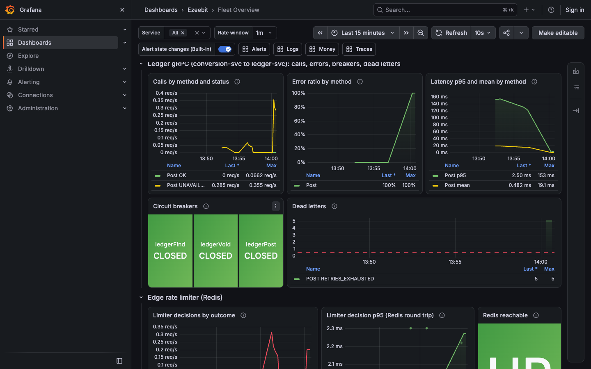
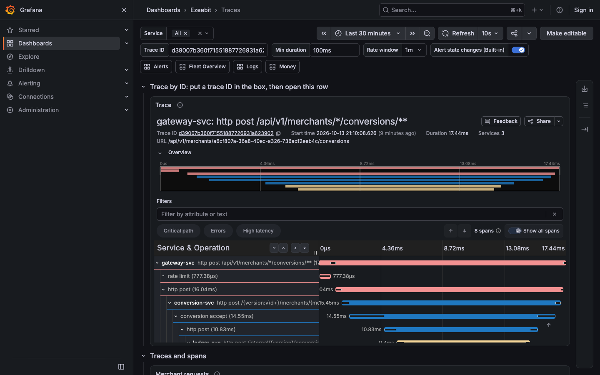
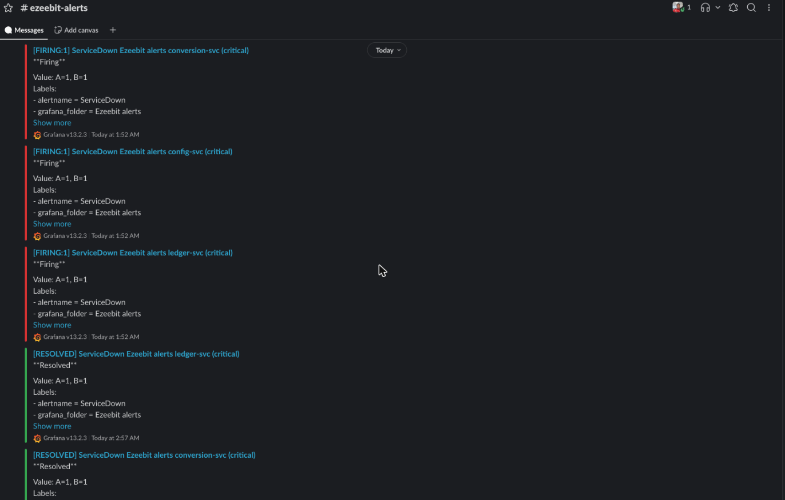
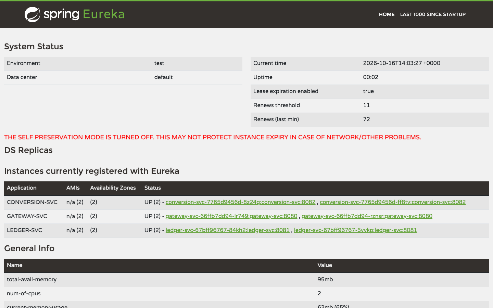
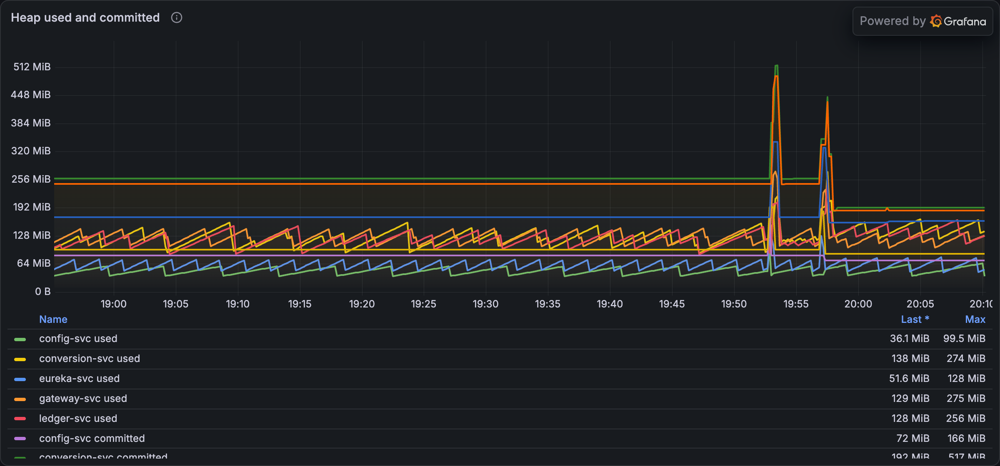

Ezeebit Wallet
A multi-currency double-entry ledger and firm-quote currency conversion, built to run the same on a laptop fleet and on Kubernetes. With the reasons behind every technology in it.
Contents
Fo. 1- The brief and the scope2
- Architecture3
- Task 1: the ledger4
- Task 2: conversion5
- Failure handling6
- CAP, per operation NEW7
- Decisions: the money model WHY8
- Decisions: the service seams WHY9
- Decisions: runtime and delivery WHY10
- Testing11
- Quality and supply-chain gates12
- Observability and alerting13
- Kubernetes parity on kind14
- Chaos and resilience15
- Releases16
- How Tasks 3 to 6 fit17
- Summary18
- Lessons learnt19
- Potential further work20
- Memory: observed, then derived NEW21
- Security gates: SAST, SCA and live probes NEW22
How to readFolios 8 to 10 post every technology choice like a ledger entry: Dr is what the choice buys, Cr is what it costs. Arrow keys, Page Up and Page Down move one sheet. The deep detail is in the repository: README, SOLUTION, ARCHITECTURE, EVIDENCE and docs/k8s.md.
The brief and the scope
Fo. 2Two of six tasks, chosen because every other task posts through them.
Task 1: hold money
Hold a merchant’s money across five currencies, so every balance can be trusted completely and explained at any later date.
Task 2: convert money
Quote a firm price from the exchange-rate service, then convert at exactly that price, or reject clearly.
Why these two
They are the core money model. A withdrawal is a ledger debit; a crypto payment is a ledger deposit; auto-settlement is a conversion; payout routing sits behind the withdrawal. If the ledger and conversion are right, Tasks 3 to 6 are plumbing around them.
DerivationThe brief was read as a grammar exercise: nouns proposed things, verbs proposed operations, and words like “completely”, “large” and “must never” became proof obligations the design had to make true. A subtractive pass then removed Merchant, Fiat, Crypto and Settlement as services, and added Conversion, which the first sketch missed.
Architecture
Fo. 3Two core services own the money and their own PostgreSQL databases; everything else supports them. Only the ledger writes money.
Reading itCore: conversion owns pricing, the ledger owns balances, each in its own database. Supporting: the gateway and Redis guard the edge; config, Eureka, Kafka, the rate stand-in and LGTM serve the core and hold no money. Red is the money path over gRPC; the dashed line is the Kafka dead-letter path. Both databases share one PostgreSQL instance here: separate databases, one failure domain.
The ledger
Fo. 4A double-entry journal: the statement explains every balance.
Balanced journals
Every movement is a journal whose entries sum to zero per currency.
Insert-only history
Entries are never edited. Each carries balance_after, so a balance explains itself.
Currencies cannot mix
A composite foreign key ties each entry’s currency to its account’s, even under an application bug.
Duplicates are expected
The idempotency key is stored with the journal in the same transaction; a replay returns the stored answer.
| Currency | Kind | Scale |
|---|---|---|
| ZAR · NGN · KES | FIAT | 2 |
| USDT · USDC | STABLECOIN | 6 |
| "10.500" ZAR is accepted · "10.001" ZAR is refused, never rounded | ||
A replayed deposit returns the identical answer and credits once. The same key with a different body is 422.
ProvenUnder row locks, 50 concurrent deposits sum exactly, and 20 concurrent copies of one deposit credit once. The journal is the source of truth; account.balance and balance_after are caches the journal can audit.
Conversion
Fo. 5Firm quote, then accept: the price shown is the price paid, or a clear rejection.
Quote
Call the rate service (2 s timeouts, no fallback rate), validate it, apply the spread, round in the platform’s favour.
Accept
Within the quote’s 15 s lifetime, with an Idempotency-Key. The same quote under another key is 409.
Post
The ledger posts four entries in one transaction, under merchant row locks, with funds and a deadline checked.
| Account | Currency | Amount | Balance after |
|---|---|---|---|
| Merchant | ZAR | −1000.00 | 500.00 |
| Platform FX | ZAR | +1000.00 | · |
| Platform FX | USDT | −53.982730 | · |
| Merchant | USDT | +53.982730 | 53.982730 |
| Σ ZAR = 0.00 · Σ USDT = 0.000000 · rate 0.054254 less a 50 bps spread | |||
Demo pathFrom the README: deposit 1500.00 ZAR, quote 1000.00 ZAR to USDT, convert within 15 seconds, read back 53.982730 USDT and 500.00 ZAR. Rounding favours the platform by at most one minor unit. The platform FX account per currency is the open position, and may go negative.
Failure handling
Fo. 6A PENDING conversion is resolved, never guessed. Rehearsed ledger outage, 14 October.
| Time | Event |
|---|---|
| t+0s | ledger-svc killed with kill -9 |
| t+1 to 4s | 5 conversions answer 202 PENDING; 5 dead letters to Kafka |
| t+16s | ConversionLedgerDeadLettered alerting |
| t+27s | Page delivered to Slack |
| t+166s | FIND circuit breaker open |
| t+350s | Sweeper voided all 5 on both sides |
| t+369s | PENDING count back to 0 |
Up to 3 gRPC attempts, then PENDING. A ledger refusal is committed before it is answered, so a late posting can never land. The sweeper asks the ledger once no posting can still commit: found means settled; not found writes a VOID marker.

Why no replayA dead letter for a call with an unknown outcome is record and alert only. Replaying it would race the sweeper, which owns the outcome. A posting and a void race on one unique index, so the first commit wins and the two databases’ clocks do not matter.
CAP, per operation
Fo. 7Under a partition a service either refuses or risks a wrong answer. The choice is made per operation, not per system: money refuses, signals keep going.
| Operation | Cut off from | Chooses | What the merchant sees |
|---|---|---|---|
| Post money (deposit, conversion legs) | ledger DB | CP | The request fails; nothing is half-written, every posting is one transaction |
| Balances, statement | ledger DB | CP | An error, never a stale balance: no cache, no read replica |
| Quote | rate service | CP | 503 RATE_UNAVAILABLE in about 4.2 s; never a default rate |
| Accept | ledger-svc (gRPC) | A reply · C money | 202 PENDING within the gateway’s 10 s; the sweeper settles it with Find, or voids it |
| Rate limit | Redis | CP · fails closed | 503 RATE_LIMITER_UNAVAILABLE; nothing is forwarded unlimited |
| Routing | eureka-svc | AP | Served from the last registry; only a never-sent request is resent |
| Configuration | config-svc | AP | Nothing while running; a restarting service cannot boot |
| Dead letter | Kafka | AP | Nothing: the publish is asynchronous; a failed publish is counted and paged |
Why accept splits
The reply cannot wait for a partition to heal, and the money cannot be guessed. A late posting and a void race on one unique index: the first commit wins.
Why the dead letter sits in conversion
The caller is the side that sees the partition. Kafka is a separate failure domain, so the alert survives a ledger outage. It is a signal; the sweeper owns the outcome.
PACELC: no partition
The ledger still trades latency for consistency: one merchant’s postings serialise on row locks, and every read comes from the primary.
Under testThe rehearsed ledger outage (Fo. 6) is this table under fire: 5 conversions answered PENDING, 5 dead letters, 5 voids, and no conversion was posted twice.
The money model, and why
Fo. 8Each choice posted as an entry: what it buys (Dr) against what it costs (Cr).
account.balance and balance_after are caches of itNUMERIC(38,18) and BigDecimalCHECK (balance >= 0) as the last lineThe service seams, and why
Fo. 9Where the system is cut, and how each cut is guarded.
.proto compiled by both/internal/** unreachable. Room for payouts and settlement.Per-pod bucketsIn-heap buckets multiply the limit by the replica count, and an autoscaler adds replicas exactly when traffic is abusive. That is why the limit lives in Redis.
Runtime and delivery, and why
Fo. 10The platform under the code, and how it gets built, shipped and watched.
Testing
Fo. 11Every concurrency, idempotency and currency test was seen failing with its control removed.
conversion-svc’s scenarios run against the real ledger jar, with WireMock and a gRPC proxy scripting faults.
Concurrency
50 concurrent deposits sum exactly. 20 copies of one deposit credit once. 8 concurrent conversions from one balance succeed exactly as often as the funds allow.
Red before green
A test was trusted only after it failed without its control: row lock, unique constraint, composite foreign key, request-hash check.
Edge inputs
Three inputs once answered 500: a balance past 20 digits, a NUL in a reference, a statement window out of range. Each now answers 422 or 400.
Architecture tests
A shared gate fails the build when any bean takes more than 3 injected dependencies. OpenAPI snapshots are checked in the build.
CaughtThe first concurrent-conversion test stayed green with the source-account lock removed, because a shared target lock serialised everything. It now buys a different currency per request and goes red without the source lock.
Quality and supply-chain gates
Fo. 12One Gradle build carries every gate.
Dependency budget
At most 3 injected collaborators per bean; 8 beans were split by job to meet it.
Static analysis
SpotBugs with Find Security Bugs, Checkstyle, JaCoCo coverage floors; SonarQube opt-in.
Secrets
gitleaks scans the whole git history.
Images
Paketo buildpacks, builder and run image pinned by tag and digest. No hand-written Dockerfile.
SBOM and CVEs
A software bill of materials per image; trivy fails fixable HIGH and CRITICAL findings in the service layers and reports the base layers.
Kubernetes gates
Manifest tags match the build version; replicas, connection-pool budget and virtual threads are checked.
Not yetA CircleCI pipeline runs the same Gradle commands, but it has not been connected, so it has never run. The dependency budget is a hard gate rather than a heuristic: a count of constructor collaborators cannot be gamed the way a coverage percentage can.
Observability and alerting
Fo. 13Metrics, logs, traces and continuous profiles to one LGTM stack. Delivery proven by breaking something, not by the rule existing.


ProfilesSince 0.4.0 every service streams wall-clock, allocation and lock profiles to Pyroscope at a 10 ms interval, at most 12 millicores per JVM; ProfilingFailing and ProfilesAbsent page when a profile stops arriving. LimitsEVIDENCE.md holds every screenshot with what it proves, and what it does not: one Slack channel is not an on-call rota.
Kubernetes parity on kind
Fo. 14The same images and configuration names as the laptop fleet, at more than one replica. Proof against “it works on my machine”.
Replica fixes
A killed pod leaves Eureka in about 30 s: 5 s renewals, a 15 s lease that eureka-core counts twice, eviction every 5 s. Meanwhile the gateway resends only a request that was never sent, never one that reached a service. Rate-limit buckets live in Redis, shared by every gateway replica.
Run it
./k8s/kube.sh up | status | down | sweep. A lease lets only one fleet run at a time, compose or kind.

Chaos and resilience
Fo. 15One sweep, from no cluster to a deleted one. Release 0.4.0.
9 / 9 passkind sweep · 0.4.0| Check | What it proves |
|---|---|
| parity, replicas | The cluster runs what the manifests and gates declare |
| money, policy | Deposits and conversions reconcile; only named callers reach each port |
| chaos | Kills under traffic lose or duplicate no money |
| outage, monitoring | The alert fires, and Grafana stays up through every check |
The chaos monkey ships paused
./k8s/kube.sh chaos on | off | run | status. When on, a random pod is killed every 10 minutes. It cannot reach the monitoring namespace or read Secrets.
EvidenceCommitted log: docs/k8s/verification/2026-11-05-0.4.0-slack-sweep.log. With the Slack webhook set, Grafana’s Slack notification counter rose 0 to 1 on the dead-letter alert; 0.3.2 captured the page in the channel. The compose fleet proved firing and resolved on 14 October.
Releases
Fo. 16Gitflow: feature branch, then dev, then rel-*, then main, tagged on the release merge.
Tasks 1 and 2, observability, SAST, supply chain, CI definition.
Gateway, gRPC to the ledger, Resilience4j, Kafka dead letters, Slack.
Kubernetes on kind, HPA, chaos monkey, Eureka evidence.
Base-image CVE fix (openssl), virtual threads with a gate.
guava and snappy-java pinned for three HIGH CVEs, OpenAPI patterns, Slack proven on kind.
Continuous profiling with Pyroscope, G1 with compact object headers, Spring Boot 4.1.2.
RulesTags are digits only, pushed, and never moved. The qa/stg stage was skipped because no such environment exists yet. 0.3.1 fixed an openssl HIGH that 0.3.0 shipped in the Paketo base layer.
How Tasks 3 to 6 fit
Fo. 17None needs a change to the ledger’s model. Each is a new caller that posts journals.
Task 3: withdrawals
payout-svc moves money to a PLATFORM_PAYOUT_PENDING account under the same row lock. Success clears it; failure reverses it.
Task 4: incoming crypto
A chain listener keyed on (chain, transaction hash, log index) posts the Task 1 deposit after enough confirmations.
Task 5: auto-settle
A rule owned by conversion-svc reacts to ledger deposit events through a transactional outbox, then runs quote and accept.
Task 6: payout routing
Partners per country with limits and health, a breaker per partner, failover only before a partner accepts.
InvariantFunds stay in a pending account until a terminal outcome, so a partner failure can never lose or duplicate money. Entries are never edited, only reversed.
Summary
Fo. 18What this journal presented, carried forward.
| Line | Carried forward |
|---|---|
| Scope | Tasks 1 and 2, the core money model every other task posts through. |
| Design | Two domain services, each with its own database; only the ledger writes money. |
| Correctness | Balanced, insert-only journals; idempotent writes; amounts refused, never rounded. |
| Decisions | Every technology chosen against a named alternative, with its cost written down. |
| Failure | PENDING is resolved by a sweeper and paged, never guessed. |
| CAP | Money chooses consistency and refuses under a partition; routing, config and dead letters stay available. |
| Proof | 831 tests, every key control seen red first; gates for SAST, CVEs, SBOMs and dependencies. |
| Operations | A rehearsed outage paged Slack in 27 s; the kind sweep passed 9 of 9 under chaos. |
Lessons learnt
Fo. 19Each came from verification disagreeing with the first version.
Green health checks are not routing
Every probe was green while the gateway saw an empty registry for up to a minute. Found by stopping one service.
A test must fail without its control
A concurrency test stayed green with the lock removed, because a second lock serialised the requests.
Test the wiring you ship
Tests ran with Eureka off; live, a builder bean stopped conversion-svc reading the registry. A test now boots with Eureka on.
Make a refusal durable first
A retry could post after REJECTED was recorded. The ledger now commits the refusal before answering.
Scan the base image too
A service-layer gate passed while an openssl HIGH shipped in 0.3.0; fixed in 0.3.1.
Read the command’s own exit
A wrapper reported failure for a sweep whose own log ended exit=0, and success for a red build.
MethodAn argument about the system is not an observation of it. Run the failure path, and read the number the command itself wrote.
Potential further work
Fo. 20In priority order.
| # | Item | Why |
|---|---|---|
| 1 | Scheduled reconciliation | Every balance equals the sum of its entries, every journal sums to zero; alert on any difference. |
| 2 | Security on internal paths | Authentication on /internal/**, and mTLS on the gRPC seam with caller identity. |
| 3 | Platform FX position | The open position per currency as a metric and a panel. |
| 4 | One home for currency scales | A ledger currency endpoint, so conversion stops keeping its own copy. |
| 5 | Two conversion-svc instances | Prove the sweeper live across processes, not only in tests. |
| 6 | Transactional outbox | Ledger events for Task 5, then Tasks 3 to 6 on the same ledger. |
| 7 | Retention and portability | Quote retention, and the same suite on MySQL 8. |
| 8 | Pipeline and base image | Connect CircleCI, and clear the Go HIGHs in the buildpack binaries once Paketo ships a fix. |
SourceSOLUTION.md section 6 is the ordered list (its items 2 and 7 are merged here); section 7 holds every known gap, including the pipeline. Scheduled separately for December 2026: highly available PostgreSQL (CloudNativePG, PgBouncer), because one Postgres pod is still a single failure domain.
Memory: observed, then derived
Fo. 21What Grafana showed on the kind fleet, idle at 8 pods, and the cuts those numbers point to. Measured lines are measured; projections are published ratios until one service is ported.
| MiB per pod | Working set | Heap committed | Class metadata |
|---|---|---|---|
| conversion-svc | 375 → 351 | 129 → 96 | 118 → 124 |
| ledger-svc | 367 → 348 | 123 → 93 | 117 → 122 |
| gateway-svc | 360 → 317 | 85 → 81 | 107 → 111 |
| eureka-svc | 360 → 329 | 97 → 87 | 96 → 100 |
| config-svc | 374 → 272 | 83 → 72 | 75 → 78 |
| 8 pods | 2938 → 2633 | −305 MiB, −10%, from G1 and compact object headers in 0.4.0 | |
ObservedEach cell reads 0.3.2-era SerialGC → 0.4.0 G1. conversion-svc is the heaviest pod, and its heap is the smaller part: class metadata (Metaspace plus class space) is about as large as the heap and G1 did not move it. Of 351 MiB, about 96 is heap, 124 class metadata, 23 compiled code; the rest is threads, buffers and the profiler.

| Derived option | Targets | Per pod, estimated | Costs |
|---|---|---|---|
| Spring AOT plus a JDK 25 AOT cache (Leyden) | bean wiring and class loading at start | −5 to −10% | Mostly startup, 40 to 60% faster. The bean graph is fixed at build time, so a served config value can no longer switch a bean on or off. |
| Quarkus JVM, conversion-svc first | class metadata: build-time wiring, no runtime reflection | 351 → ~210 to 245 | A port per service. The heaviest pod goes first, then ledger-svc. Gateway, Eureka and Config Server have no Quarkus twin. |
| Kubernetes discovery and ConfigMaps | eureka-svc and config-svc themselves | −601 MiB fleet | An architecture change, not a framework one: two pods gone, and with them the registry caches tuned for routing. |
| Native image (Spring or Quarkus) | the whole JVM | ~70 to 110 · ~40 to 70 | Serial GC only on GraalVM CE, lower peak throughput, 3 to 6 min and 5 to 8 GB per build, native metadata for Resilience4j, Kafka and gRPC. |
NextPort conversion-svc and compare its working set under the sweep's own traffic; only that turns the Quarkus line into a measurement. The 1 GiB limit is not under pressure today: the gain is pods per node, not stability. LimitsIdle readings; the G1 pods were 13 minutes old against 3 to 19 hours for the baseline. Evidence: docs/observability/verification/2026-11-05-memory-snapshots.txt.
Security gates: SAST, SCA and live probes
Fo. 22What reads the code, what reads the shipped image, and what is tried against a running fleet. One kind of tool is missing, and it is named rather than implied.
| Kind | Tool | Reads | Fails the build or the run when |
|---|---|---|---|
| SAST | SpotBugs 4.10.5 with Find Security Bugs 1.14.0 | compiled classes of every service, effort max, confidence low | any finding not excluded with a written reason; checkSpotbugsReport fails if Find Security Bugs did not run over a full analysis |
| SAST | Checkstyle 14.3.0 | every Java source set | any violation |
| SAST | gitleaks 8.30.1 and trivy secret scan (checkSecrets) | the whole git history and the tree | any secret found, or a scan that left no evidence |
| SAST | SonarQube, opt-in | source and coverage | runs only with SONAR_TOKEN; otherwise skipped with the reason printed |
| SCA | trivy 0.74.0 (checkSupplyChain) | the 5 shipped images, a CycloneDX SBOM per image, manifest misconfiguration | a HIGH or CRITICAL with a fix, in a service layer. 0.4.0 passed; 6 Go HIGHs in the buildpack’s own binaries ship, named in docs/supply-chain.md |
| Live | kind sweep, policy | the running cluster, default-deny with 20 NetworkPolicies | an unnamed pod reaches Postgres, or ledger-svc cannot; the refused arm runs only after a control connection succeeds, so a broken probe is not read as a refusal |
| Live | gateway tests and the sweep’s burst | real HTTP against running processes | /internal/** answers anything but 404; Redis down answers anything but 503 (the limiter fails closed); a 200-request burst admits more than capacity plus refill |
| DAST | none yet | n/a | No scanner such as OWASP ZAP crawls or fuzzes the running API. Next: a ZAP baseline scan of the gateway on the compose fleet, failing on HIGH. |
PinnedThe scanners are pinned by tag and digest in security/scanners.lock, each the newest release at least two weeks old; every verdict prints its vulnerability database date, because the data changes daily. SplitSAST finds defects nobody has catalogued in this repository’s code; SCA finds catalogued CVEs in code nobody here wrote. Detail: docs/quality-gates.md and docs/supply-chain.md.
Thank you
Questions and discussion.